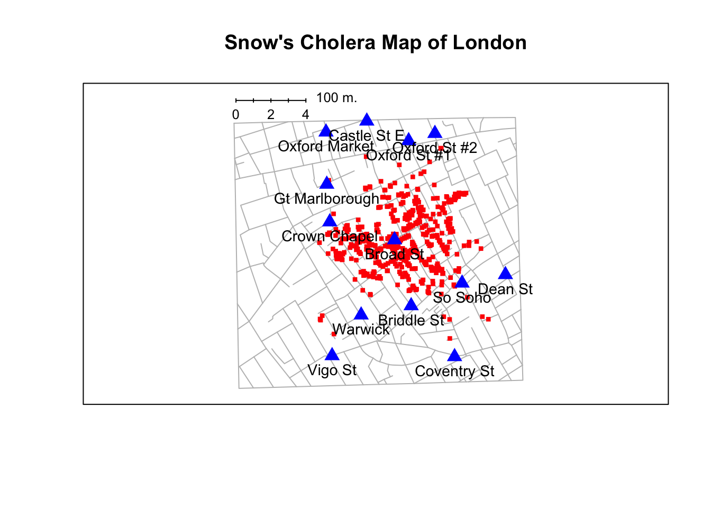
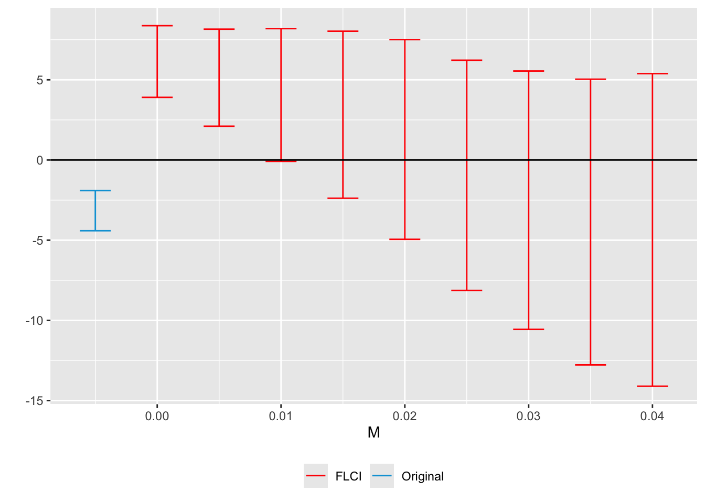

In industry there are lots of opportunity for causal inference! Actually in a lot of cases we don’t really realize! Platforms are constantly changing and companies want to evaluate the rollout of new features and whether or not they actually move the needle is important since they are sinking a lot of time and resources into these features. So today we are going to tackle A/B experiments broadly while touching up our understanding of a host of other causal inference methods. One thing that I think is kind of cool is that there is a lot more communication between Academic Social Sciences and the Causal Inference world. We are all dealing with the same problem but some us have more money than the others. However, we can’t run away from of the fundamental problems we face.
The Fundamental Problem
The fundamental problem of causal inference is that we don’t have a time machine. By that I mean we would love to have a data frame like this where we can get the individual level causal effect. Meaning we can observe what would happen if we assigned people the treatment and what would happen if people never received the treatment.
To do this we would need a time machine to go back in time and either give them the treatment or take away the treatment. We only ever observe one state of an individual. We are missing half of the information to get this individual result. Instead we have to come up with a framework that lets us bridge these worlds. The most common framework and kind of the working model that motivates the observational causal inference framework is the Randomized Control Trial/ A/B test framework. We kind of all intuitevely understand this framework. We have a, more or less, exchangeable group of people, villages etc and then we randomize treatment status then take the average of the outcome. Effectively we can think of it as
Notice that the randomizer is not effected by anything and the only effect of randomization is through the treatment status. Importantly any things that make us special don’t actually determine our potential outcomes. It eliminates a lot of potential avenues for selection or and treatment status is not determined by anything else in our model. This is a pretty powerful and magical idea, but it comes at a cost. In this case we mean money. Just because we can randomize doesn’t mean we will magically find the causal effect of something on something else. In the preceding sections we will spend some time on how to do this and potential areas for trouble.
RCTs
Technically in industry they are called A/B tests because well reasons. The general idea is that this follows the canonical RCT. We have an intervention we want to test so we will run an experiment. This is straightforward idea but we have to make a lot of design considerations. Since experiments have an air of magic to them there is lots of room for them to go wrong. There are lots of statistical avenues to explore including Multi-Armed Bandit, problems staggered rollout, conjoint experiments, and whole host of other things. However, before we start with those its going to be pretty important to talk about power.
Statistical power is one thing that a variety of designs have in common since they kind of broadly fall under the null hypothesis significance testing framework. Very basically the idea of power comes down to the idea that we want our experiment to have a good shot of rejecting the null hypothesis if the alternative is true. Basically we want to reduce the probability of Type II error or the false negative rate. Importantly when power is low we tend to estimate a treatement effect that is larger than the ‘true’ treatment effect and/or the sign of the effect may be wrong (Gelman and Carlin 2017).
So what are the components of statistical power. Political scientists tend to think of power and what we are interested a bit differently then psychologists do. We tend to think of treatment effects on the scale of our oiutcome and through a regression lens. This is important because Psychologist tend to deal with standardized effect sizes and ANOVA/ANCOVA analysis which is just regression in a trench coat, but thats a conversation for another time. Much of the following section is just written notes to Carlise Rainey’s excellent power primer. I should mention that there are bespoke tools to simulate a variety of designs and identifying some potential sticking points. The setup of the paper is that we have a some experiment where we assume a null hypothesis of no treatment effect and an alternative of H1 > 0 implying a positive treatment effect. Although we can extend this to a two-tailed and/or a negative treatment effect.
Rules 1 & 2 of Statistical power
The main takeaway from this section is that we can think of power as
Lets first start with the intuition. If we could rerun our trial infinite times and collect the treatment effects and count how we frequently we observe the treatment effect we would get our canonical Gaussian distribution. The center of the distribution will be centered over the treatment effect because of the CLT. How far away a single point is from the treatment effect is just the variance. However, if we run the trial a thousand times than that would be the sample treatment effect. The distance measure in the sample is we just refer to as the standard error. To reject the null hypothesis of Treatment Effect > 0 than we would want our sampling distribution to look something like this
dat =data.frame(treat =rnorm(1000, mean =5, sd =1))ggplot(dat, aes(x = treat)) +geom_histogram() +theme_minimal() +geom_vline(xintercept =0) +labs(x ='Treatment Effect')
Kind of by extension we are powering the experiment to be able to adjudicate this. What we are saying in words that an experiment has “80% power to detect a treatment effect of ___” if \(\text{Treatment effect} - 1.64 \times \hat{SE}_{\hat{\text{TE}}} > 0\) in 80% of repeated experiments. Whats noticeable is that we are inserting the critical value of a 90% confidence level in this equation. Obviously as change our significants level then that changes the critical value. If we subsitute in the moment conditions of the normal CDF than we get back to
Effectively when we are doing a priori analysis we are making an assumption a plausible treatment effect and the variability of that estimate. However, this is pretty challenging because if we knew the treatment effect ahead of time we either simulated the data or we wouldn’t need to spend time and money on an experiment!
What treatment effect should I asume?
From a statistical power perspective there are a few things we can think about. What our best guess is of the effect, the smallest plausible effect, and the smallest substantively meaninful effect. We may have run a gajillion mailer experiments so we may have a pretty good sense of what the effect could be. That would be great but thats not neccessarily generalizeable to the rest of us. Instead we should use our substantive expertise to think about what would be a smallest plausible effect of our treatment or the smallest meaningful effect of our treatment. This will be important later because we are going to use it in our power equation.
From the SD to the SE
When we go to actually estimate our treatment effect we are going to do something like this
Where N is our total sample size and D is the fraction assigned to each condition. This \(\bar{D}\) will be important as we start adding conditions. However, lets remain focused on what this tells us. We can further decompose this which gets to the idea that \(\sigma\) is just the standard deviation within the outcome. It makes sense because what we are really doing is stratifying Y by our treatment conditions. To get a good guess of what our \(\sigma\) to plug into our treatment condition is we should find a suitable reference population. The chances are that the company or somebody else is working this area. What this gets us is that we can use features of a reference population to predict a plausible standard error. Where it looks like
\[
\frac{2 \times SD(Y)}{\sqrt{2 \times N}}
\]
Where N is the sample size per each condition. What this intuition gets us is that we can think of ways to reduce \(\varepsilon\) by including covariates. This is taking things out of the error term reducing the SE.
From the SE to the Minimum Detectable Effect Size
So this is a long way to get to this idea. If we set an alpha level of 1.90 and a target of 80% power than we know a two things. We know that the arms of either side of a 90% confidence interval are 1.64 standard errors wide thus power is the percent of the sampling distribution that is largert than 1.64 standard errors. To find the MDE we need to solve for the treatment effect that positions 80% of the sampling distribution above 1.64. So after passing it through the inverse of the standard normal CDF and centering it we get the result that for 80% power we can multiply the SE by 2.5 to get the MDE. First, the arms of the 90% confidence interval are 1.64 standard errors wide, so the power of the study is the percent of the sampling distribution that is larger than 1.64 standard errors.
Carlise uses the example of a ANES experiment where the outcome is a feelings thermometer for respondents PID. If we were to want to run a similar experiment we could take the SD of 20.8 and plug it into our numerator. The reference experiment has two conditions with more or less 500 experiments. So we can back out the minimal detectable effect size like this
sd_ref =20.8numerator = sd_ref *2denominator = math.sqrt(2*500)mde = (numerator / denominator) *2.5print(f'The minimal detectable effect is for 80% power {mde}')
The minimal detectable effect is for 80% power 3.2887687665751146
Getting to the Sample Size
Cool we could do some more stuff to bring down the standard error. However, how do we move from mde and SE to a good sample size? When we combine our rules we get something like this
If we are using an existing studies we can grab the standard errors and
Rules of Thumb According to Jpal
A larger sample increases the statistical power of the evaluation
If the effect size of the program is small, the evaluation needs a large sample to achieve a given level of power
An evaluation of a program with low take-up needs a large sample
If the underlying population has high vartiation in outcomes, the evalution eneds a large sample
For a given sample size power is maximized when the sample s equally split between the treatment and control group
For a given sample size, randomizing at the cluster level as opposed to the individual level reduces the power of the evaluation. The more similar the outcomes of individuals within clusters are, the larger the sample needs to be.
Observational Methods
These are certainly less popular then in academic social sciences there are certainly lots of opportunties for example Recast uses an augmented synthetic control model for its lift tests. Netflix uses a lot of observational causal inference methods outside of just A/B tests so its certainly worth going over some of them.
Difference in Difference
DiD dates back to as early as Snow in 1840’s London. The idea is fairly simple something happens that we don’t have any control over causing a change in the system. In the original study the Lambeth water company moved their water supply upstream of London while other water suppliers remained downstream of London. During this time Cholera was running rampant in London and most of the sewers either dumped into the Thames, people dumped things in the Thames, and then just commerical activity. The move kind of came out of nowwhere and was not influenced by any other factor other than the fact that an act of parliament forced them to move the production upstream. So if we wanted to estimate the effect of moving the water source we would follow a fairly simple formula
Lets take the mock data from that period and then get the treatment effect.
cholera =tribble(~`Region Supplier`, ~`Death Rates 1849`, ~`Death Rates 1854`,'Non-Lambeth Only (Dirty)', 134.9, 146.6,'Lambeth + Others (Mix Dirty and Clean)', 130.1, 84.9) |>mutate(treatment =ifelse(`Region Supplier`=='Non-Lambeth Only (Dirty)', 'Control', 'Treated')) |>pivot_longer(cols =!c(`Region Supplier`, treatment)) |>mutate(name =str_extract(name, '\\d+')) |>rename(year = name)(pull(cholera |>filter(treatment =='Treated', year =='1854')) -pull(cholera |>filter(treatment =='Treated', year =='1849'))) - (pull(cholera |>filter(treatment =='Control', year =='1854')) -pull(cholera |>filter(treatment =='Control', year =='1849')))
[1] -56.9
Which gives us our treatment effect. The reason we have to incorporate all this information simply boils down to the fact is that we need to ensure that we are making the proper comparisions. If we simply did the simple difference in means between the treated group we are not really getting the correct estimate because we can’t discount that the treated group would have improved over time. If we did the means post treatment and pre treatment we can’t discount that this is just a time effect. This is pretty neat and we can recover the ATE as long as we meet some identifying assumptions.
Identifying Assumptions
No Anticipation
One assumption that gets a little less attention in courses and texts is the no anticipation assumption. This one is a bit harder to test explicitly. You have to have a much more convincing story to justify that this assumption is not violated. In the Jon Snow water case this is a bit more straightforward to for me to think about than the organ donation example. Anticipation in this context may look like people strategically switching who they are getting their water from. If we remember the canoncal Braod Street pump from the Jon Snow story
HistData::SnowMap()

There are a lot of oddities in the Jon Snow data but for now we will just focus on a few cases that are instructive. There are deaths in the dataset that don’t map onto the Broad Street water pump well. Some cases we would suspect are due to other water pumps. However, due to the impressive work done by Jon Snow we know that some of these deaths are school children or workers that drank from the pump on their way home. These cases are not significant for the anticipation assumption.
There are several interesting cases where the anticipation assumption could have come into play. One women who used to live near the Broad Street water pump actually really liked the taste of the water and had the water delivered to her house. This resulted in her death and the deaths of some of her nieces. Lets say that with the annoucement of the Parliamentary law people started actively switching who they got their water from because they liked the taste and were worried about the move affecting the taste of the water. If this happens post-treatment no harm no fowl really. If this happens before treatment turns on then we have kind of a big problem. People jumping to get treated or avoid treatment violates our no anticipation assumption.
How do we detect this? Well there are still some graphical measures we can leverage. In this case we can use pre-trends plots
Where we can see a significant pretrend. Is this the best way to use an event-study plot? Ehh not really for the most part people tend to use these in support of the parallel trends assumption. We may want to start assigning placebos to see if we can detect an effect prior to treatment. But, this is also us trying to find evidence to the contrary.
The parallel trends assumption
The parallel trends assumption is the biggest one that has lots of literature dedicated to it. The parallel trends assumption simply states that if treatment would have never occured we would have seen similar trends post treatment. An unconditional parallel trends assumption is a bit hard to justify so we tend to make a conditonal parallel trends assumption.
In Figure 1 we are simply plotting the difference between the trajectories of the treated group and the control group. This is nice but what should we look for?
There are visual inspections and there are answers that we must come to that are a little bit outside the data but the data can inform our judgements. The key idea of DiD is that our control is a valid counterfactual for our treated group. This requires us to do some shoe leather investigation on whether your counterfactuals are plausible. In our organ donation example lets say that by some unforseen miracle lots of states in the control group somehow build high quality transits in major cities and high quality trains between major cities. Maybe less dramatic and possibly more plausible is there is a ‘sin’ tax of sorts on motorcycles making them much more expensive to buy and/or more green spaces like the Beltline are opened providing a free and safe bike path. All these have implications on organ donation rate because there are less situations where cars can collide with eachother, motorcycles, or bikes. What this would imply is that there are less traumatic brain injuries leading to brain death causing a decrease in organ donations. This might result in very dramatic shift in the trends.
As we can see when we reduce the donation rate dramatically visually we see that there is likely a problem with our counterfactual. For the subtle violation it is a lot harder to tell that the control group is changing at a much different rate than the treated group. If we are just evaluating the parallel trends visually this is likely to give us a different impression than we may have initially thought. As a first cut visually a simple 2 X 2 is maybe a good idea, but we might also want to dissegregate the plot. Just because in the aggregate these trends aren’t violated there may be some underlying policy that reduces our pool of candidate counterfactuals. So lets say NY implements congestion pricing reducing traffic into NYC from CT, NYC, and NJ. We may not pick this up but may not show up in our 2x2 plot.
In this case we see that the pre-trends in the affected states disappear however when we dissagregate the plot we can clarly see that we have some states that are moving a lot quicker. These states trajectories are not a great counterfactual group to use. One other thing to think about is that traffic rates in CT, and NJ are declining not due to any policy that those states enacted put because New York is affecting their traffic flows suggesting that they may not be candidates anyways. This is definently where a well defined estimand is uber important.
Recently Rambachan and Roth (2023) proposes a bounds method for testing parallel trends add a more transparent way to test for violations of the PT assumption and a well powered way to do it.
# code taken from vignette library(HonestDiD)data('LWdata_EventStudy', package ="HonestDiD")# Number of pre-periodsLW_numPrePeriods =length(LWdata_EventStudy$prePeriodIndices)LW_numPostPeriods =length(LWdata_EventStudy$postPeriodIndices)LW_l_vec =basisVector(15- (-2), LW_numPostPeriods)# Construct robust confidence intervals for Delta^{SD}(M) for 15 years of exposureLW_DeltaSD_RobustResults =createSensitivityResults(betahat = LWdata_EventStudy$betahat,sigma = LWdata_EventStudy$sigma,numPrePeriods = LW_numPrePeriods,numPostPeriods = LW_numPostPeriods,l_vec = LW_l_vec,Mvec =seq(from =0, to =0.04, by =0.005))# Construct dataframe with OLS confidence interval for thetaLW_OriginalResults =constructOriginalCS(betahat = LWdata_EventStudy$betahat,sigma = LWdata_EventStudy$sigma,numPrePeriods = LW_numPrePeriods,numPostPeriods = LW_numPostPeriods,l_vec = LW_l_vec )# Construct sensitivity plotLW_DeltaSD_SensitivityPlot =createSensitivityPlot( #robustResults = LW_DeltaSD_RobustResults,originalResults = LW_OriginalResults)LW_DeltaSD_SensitivityPlot

In this case we can visualize the effect of different shocks on the outcome of interest. The blue coefficient is really just the OLS estimator and as we increase M we are introducing more and more non-linearity the estimates from the model look a little bit more defenseble if you think that strict linearity is not totally reasonable than woohooo you can defend your estimate a bit more coherently.
Staggered Adoption
The problem we often run into is that we often don’t have all units turning treatment on at one point. Often times we have some kind of staggered adoption. While not neccessarily a problem we used to solve this with the TWFE estimator, but as Goodman-Bacon (2021) finds that is a problem.
Code
# code taken from Baker, Larcker, and Wangdata <-tibble(Y =c(2, 5, 1, 2),Unit =c("Treat", "Treat", "Control", "Control"),T =c(0, 1, 0, 1))# Make plot 1 - change in trends over timeplot1a <- data %>%ggplot(aes(x = T, y = Y, group = Unit, color = Unit)) +geom_point() +geom_line() +geom_label(aes(label = Y), hjust =0.5, vjust =-0.5, color ="black") +labs(x ="", y ="Outcome \n Variable") +scale_color_manual(values =c("#A7473A", "#4B5F6C")) +scale_x_continuous(breaks =c(0, 1), labels =c("Pre", "Post")) +ggtitle('Panel A') +ylim(c(0, 6)) +theme(legend.position ="bottom",axis.title.y =element_text(hjust =0.5, vjust =0.5, angle =360),legend.title =element_blank(),axis.text.y =element_blank(),axis.ticks.y =element_blank(),plot.title =element_text(hjust =0.5)) # Make plot 2 - remove baseline differences# make a dataset that removes first differencedata_fd <- data %>%group_by(Unit) %>%mutate(Y = Y - Y[which(T ==0)])# plotplot1b <- data %>%ggplot(aes(x = T, y = Y, group = Unit, color = Unit)) +geom_point(alpha =1/2) +geom_line(alpha =1/2, linetype ="dashed") +geom_point(data = data_fd, aes(x = T, y = Y, group = Unit, color = Unit)) +geom_line(data = data_fd, aes(x = T, y = Y, group = Unit, color = Unit)) +annotate("label", x =1, y =1, label ="1") +annotate("label", x =1, y =3, label ="3") +# these colors correspond to certain birds native to new zealand. This is the # only asymptotically correct manner to pick color palettes.scale_color_manual(values =c("#A7473A", "#4B5F6C")) +labs(x ="", y ="") +ylim(c(0, 6)) +scale_x_continuous(breaks =c(0, 1), labels =c("Pre", "Post")) +ggtitle('Panel B') +theme(legend.position ="bottom",axis.title.y =element_text(hjust =0.5, vjust =0.5, angle =360),legend.title =element_blank(),axis.text.y =element_blank(),axis.ticks.y =element_blank(),plot.title =element_text(hjust =0.5)) # Make plot 3 - difference in differences# dataset with the first differencesdata_dd <-tribble(~Unit, ~Diff,"Treat", 3, "Control", 1)# plotplot1c <- data_dd %>%ggplot(aes(x = Unit, y = Diff, group = Unit, fill = Unit)) +geom_col() +scale_fill_manual(values =c("#A7473A", "#4B5F6C")) +labs(x ="", y =expression(Delta)) +ylim(0, 3.5) +geom_label(aes(label = Diff), fill ="white", vjust =-0.2) +annotate("segment", x =2, xend =2, y =1, yend =3, color ="white", arrow =arrow(length =unit(0.1, "inches"))) +annotate("segment", x =2, xend =2, y =3, yend =1, color ="white", arrow =arrow(length =unit(0.1, "inches"))) +annotate("segment", x =1.5, xend =2.5, y =1, yend =1, color ="white") +annotate("label", x =2, y =2, label ="Treatment Effect \n = 2") +ggtitle('Panel C') +labs(y =expression(Delta), x ="") +theme(legend.position ="bottom",axis.title.y =element_text(hjust =0.5, vjust =0.5, angle =360, size =14),legend.title =element_blank(),axis.ticks.y =element_blank(),plot.title =element_text(hjust =0.5))# combine subplotsplot1 <- plot1a + plot1b + plot1c# save# Plot - GB1 ---------------------------------------------------------# Goodman-bacon decomp, overall informationdata <-tibble(time =0:100,U =seq(5, 12, length.out =101),l =seq(10, 17, length.out =101) +c(rep(0, 85), rep(15, 16)),k =seq(18, 25, length.out =101) +c(rep(0, 34), rep(10, 67))) %>%pivot_longer(-time, names_to ="series", values_to ="value")# plotGB1 <- data %>%ggplot(aes(x = time, y = value, group = series, color = series, shape = series)) +geom_line(size =2) +geom_point(size =2) +geom_vline(xintercept =c(34, 85)) +labs(x ="Time", y ="Units \n of y") +scale_x_continuous(limits =c(0, 100), breaks =c(34, 85), labels =c(expression('t'['k']^'*'), expression('t'['l']^'*')), expand =c(0, 0)) +annotate("text", x =10, y =21, label =expression('y'^'k'), size =9) +annotate("text", x =50, y =16, label =expression('y'^'l'), size =9) +annotate("text", x =90, y =14, label =expression('y'^'U'), size =9) +annotate('label', x =17, y =4, label ='T1') +annotate('label', x =60, y =4, label ='T2') +annotate('label', x =93, y =4, label ='T3') +annotate("segment", x =1, xend =33, y =2, yend =2, color ="black", arrow =arrow(length =unit(0.1, "inches"))) +annotate("segment", x =33, xend =1, y =2, yend =2, color ="black", arrow =arrow(length =unit(0.1, "inches"))) +annotate("segment", x =35, xend =84, y =2, yend =2, color ="black", arrow =arrow(length =unit(0.1, "inches"))) +annotate("segment", x =84, xend =35, y =2, yend =2, color ="black", arrow =arrow(length =unit(0.1, "inches"))) +annotate("segment", x =86, xend =99, y =2, yend =2, color ="black", arrow =arrow(length =unit(0.1, "inches"))) +annotate("segment", x =99, xend =86, y =2, yend =2, color ="black", arrow =arrow(length =unit(0.1, "inches"))) +scale_y_continuous(limits =c(0, 40), expand =c(0, 0)) +scale_color_manual(values =c("#A7473A", "#4B5F6C", "#51806a")) +theme(axis.title =element_text(size =18),axis.text =element_text(size =16),legend.position ='none',plot.background =element_blank(),axis.title.y =element_text(angle =0, hjust =0.5, vjust =0.5),axis.ticks.y =element_blank())# save # Plot - GB2 ---------------------------------------------------------# function to make subplotsmake_subplot <-function(omit, keep_dates, colors, breaks, break_expressions, series, series_x, series_y, break_names, break_loc, arrow_start, arrow_stop, title){ data %>%filter(series != omit & time >= keep_dates[1] & time <= keep_dates[2]) %>%ggplot(aes(x = time, y = value, group = series, color = series, shape = series)) +geom_line() +geom_point() +geom_vline(xintercept = breaks) +labs(x ="Time", y ="Units \n of y") +scale_x_continuous(limits =c(0, 105), breaks = breaks, labels = break_expressions, expand =c(0, 0)) +annotate("text", x = series_x[1], y = series_y[1], label = series[1]) +annotate("text", x = series_x[2], y = series_y[2], label = series[2]) +annotate('label', x = break_loc[1], y =5, label = break_names[1]) +annotate('label', x = break_loc[2], y =5, label = break_names[2]) +annotate("segment", x = arrow_start[1], xend = arrow_stop[1], y =2, yend =2, color ="black", arrow =arrow(length =unit(0.1, "inches"))) +annotate("segment", x = arrow_stop[1], xend = arrow_start[1], y =2, yend =2, color ="black", arrow =arrow(length =unit(0.1, "inches"))) +annotate("segment", x = arrow_start[2], xend = arrow_stop[2], y =2, yend =2, color ="black", arrow =arrow(length =unit(0.1, "inches"))) +annotate("segment", x = arrow_stop[2], xend = arrow_start[2], y =2, yend =2, color ="black", arrow =arrow(length =unit(0.1, "inches"))) +scale_y_continuous(limits =c(0, 40), expand =c(0, 0)) +scale_color_manual(values =c(colors[1], colors[2])) +ggtitle(title) +theme(axis.title =element_text(size =18),axis.text =element_text(size =16),legend.position ='none',plot.background =element_blank(),plot.title =element_text(hjust =0.5),axis.title.y =element_text(angle =0, hjust =0.5, vjust =0.5),axis.ticks.y =element_blank()) }# make the four subplotsp1 <-make_subplot(omit ="l", keep_dates =c(0, 100), colors =c('#A7473A', '#51806a'), breaks =34, break_expressions =expression('t'['k']^'*'), series =c(expression('y'^'k'), expression('y'^'U')),series_x =c(10, 90), series_y =c(23, 16), break_names =c('T1', 'T2 + T3'), break_loc =c(17, 66), arrow_start =c(1, 35), arrow_stop =c(33, 99), title =bquote(paste('A. Early Group vs. Untreated Group')))p2 <-make_subplot(omit ="k", keep_dates =c(0, 100), colors =c('#4B5F6C', '#51806a'), breaks =85, break_expressions =expression('t'['l']^'*'), series =c(expression('y'^'l'), expression('y'^'U')),series_x =c(50, 90), series_y =c(18, 16), break_names =c('T1 + T2', 'T3'), break_loc =c(50, 95), arrow_start =c(1, 86), arrow_stop =c(84, 99), title =bquote(paste('B. Late Group vs. Untreated Group')))p3 <-make_subplot(omit ="U", keep_dates =c(0, 84), colors =c('#A7473A', '#4B5F6C'), breaks =c(34, 85), break_expressions =c(expression('t'['k']^'*'), expression('t'['l']^'*')), series =c(expression('y'^'k'), expression('y'^'l')),series_x =c(10, 50), series_y =c(23, 18), break_names =c('T1', 'T2'), break_loc =c(17, 60), arrow_start =c(1, 35), arrow_stop =c(33, 84), title =bquote(paste('C. Early Group vs. Late Group, before ', 't'['l']^'*', sep =" ")))p4 <-make_subplot(omit ="U", keep_dates =c(34, 100), colors =c('#A7473A', '#4B5F6C'), breaks =c(34, 85), break_expressions =c(expression('t'['k']^'*'), expression('t'['l']^'*')), series =c(expression('y'^'k'), expression('y'^'l')),series_x =c(60, 50), series_y =c(36, 18), break_names =c('T2', 'T3'), break_loc =c(60, 95), arrow_start =c(35, 86), arrow_stop =c(84, 99), title =bquote(paste('D. Late Group vs. Early Group, after ', 't'['k']^'*', sep =" ")))# combine plotsp1 + p2 + p3 + p4 +plot_layout(nrow =2)
Figure 2
Put simply the TWFE estimator is just where we include intercepts for the time and the spatial unit (typically). There is nothing inherently ‘wrong’ with this the problem is that the ATT we are identifying is not comparing treated and non-treated groups. If we think about this our heads this makes sense! As Figure 2 demonstrates there are a variety of comparisions that the matrix algebra can make. We can compare:
Never Treated vs Early Groups
Early Group vs Late Group
Late Group vs Early Group
Late Group vs Never Treated
What this means is that the \(\beta\) from our is really just weighted average of all these comparisions. What influences the weights is the sample size meaning what share of units are in the treatment group and the comparision group, the subsample variance of the treatment, and the timing. Functionally what is happening is the model is getting confused by what comparisions to make. Lets take another plot from Baker, Larcker, and Wang (2021) where we really great looking PT with staggered treatment timings.
Code
library(lfe)library(fastDummies)library(ggthemes)library(did)#----------------------------------------------------------------------------iseed =20201221nrep <-100true_mu <-1set.seed(iseed)#----------------------------------------------------------------------------## Generate data - treated cohorts consist of 250 obs each, with the treatment effect still = true_mu on averagemake_data <-function(nobs =1000, nstates =40) {# unit fixed effects (unobservd heterogeneity) unit <-tibble(unit =1:nobs,# generate statestate =sample(1:nstates, nobs, replace =TRUE),unit_fe =rnorm(nobs, state/5, 1),# generate instantaneous treatment effect#mu = rnorm(nobs, true_mu, 0.2)mu = true_mu )# year fixed effects (first part) year <-tibble(year =1980:2010,year_fe =rnorm(length(year), 0, 1) )# Put the states into treatment groups treat_taus <-tibble(# sample the states randomlystate =sample(1:nstates, nstates, replace =FALSE),# place the randomly sampled states into four treatment groups G_gcohort_year =sort(rep(c(1986, 1992, 1998, 2004), 10)) )# make main dataset# full interaction of unit X year expand_grid(unit =1:nobs, year =1980:2010) %>%left_join(., unit) %>%left_join(., year) %>%left_join(., treat_taus) %>%# make error term and get treatment indicators and treatment effects# Also get cohort specific trends (modify time FE)mutate(error =rnorm(nobs*31, 0, 1),treat =ifelse(year >= cohort_year, 1, 0),tau =ifelse(treat ==1, mu, 0),year_fe = year_fe +0.1*(year - cohort_year) ) %>%# calculate cumulative treatment effectsgroup_by(unit) %>%mutate(tau_cum =cumsum(tau)) %>%ungroup() %>%# calculate the dep variablemutate(dep_var = (2010- cohort_year) + unit_fe + year_fe + tau_cum + error)}#----------------------------------------------------------------------------# make datadata <-make_data()# plot data %>%ggplot(aes(x = year, y = dep_var, group = unit)) +geom_line(alpha =1/8, color ="grey") +geom_line(data = data %>%group_by(cohort_year, year) %>%summarize(dep_var =mean(dep_var)),aes(x = year, y = dep_var, group =factor(cohort_year),color =factor(cohort_year)),size =2) +labs(x ="", y ="Value", color ="Treatment group ", title ="One draw of the DGP with homogeneous effects across cohorts \n and with all groups being eventually treated") +geom_vline(xintercept =1986, color ='#E41A1C', size =2) +geom_vline(xintercept =1992, color ='#377EB8', size =2) +geom_vline(xintercept =1998, color ='#4DAF4A', size =2) +geom_vline(xintercept =2004, color ='#984EA3', size =2) +scale_color_brewer(palette ='Set1') +theme_minimal() +theme(legend.position ='bottom',#legend.title = element_blank(), axis.title =element_text(size =14),axis.text =element_text(size =12)) +theme(plot.title =element_text(hjust =0.5, size=12))
Figure 3
We may think to ourselves well we can either our canonical TWFE estimator or some withcraft with leads and lags or some reviewer or stakeholder is going to want to see both so lets do both.
Code
keepvars <-c("`rel_year_-5`", "`rel_year_-4`", "`rel_year_-3`", "`rel_year_-2`","rel_year_0", "rel_year_1", "rel_year_2", "rel_year_3", "rel_year_4", "rel_year_5")run_ES_DiD <-function(...) {# resimulate the data data <-make_data()# make dummy columns data <- data %>%# make dummiesmutate(rel_year = year - cohort_year) %>%dummy_cols(select_columns ="rel_year") %>%# generate pre and post dummiesmutate(Pre =ifelse(rel_year <-5, 1, 0),Post =ifelse(rel_year >5, 1, 0))# estimate the model mod <- lfe::felm(dep_var ~ Pre +`rel_year_-5`+`rel_year_-4`+`rel_year_-3`+`rel_year_-2`+`rel_year_0`+`rel_year_1`+`rel_year_2`+`rel_year_3`+`rel_year_4`+`rel_year_5`+ Post | unit + year |0| state, data = data, exactDOF =TRUE)# grab the obs we need mod2 <-tibble(estimate = mod$coefficients,term1 =rownames(mod$coefficients) ) es <- mod2 %>%filter(term1 %in% keepvars) %>%mutate(t =c(-5:-2, 0:5)) %>%select(t, estimate) es}data_classical <-map_dfr(1:nrep, run_ES_DiD)colors <-c("True Effect"="red", "Estimated Effect"="blue")ES_plot_classical <- data_classical %>%group_by(t) %>%summarize(avg =mean(estimate),sd =sd(estimate),lower.ci = avg -1.96*sd,upper.ci = avg +1.96*sd) %>%bind_rows(tibble(t =-1, avg =0, sd =0, lower.ci =0, upper.ci =0)) %>%mutate(true_tau =ifelse(t >=0, (t +1)* true_mu, 0)) %>%ggplot(aes(x = t, y = avg)) +#geom_linerange(aes(ymin = lower.ci, ymax = upper.ci), color = 'darkgrey', size = 2) + geom_ribbon(aes(ymin = lower.ci, ymax = upper.ci), color ="lightgrey", alpha =0.2) +geom_point(color ='blue', size =3) +geom_line(aes(color ='Estimated Effect'), size =1) +geom_line(aes(x = t, y = true_tau, color ='True Effect'), linetype ="dashed", size =2) +geom_hline(yintercept =0, linetype ="dashed") +scale_x_continuous(breaks =-5:5) +labs(x ="Relative Time", y ="Estimate") +theme(axis.title =element_text(size =14),axis.text =element_text(size =12)) +ggtitle("TWFE event-study regression with binned end-points")+scale_color_manual(values = colors) +theme(plot.title =element_text(hjust =0.5, size=12),legend.position ="bottom", legend.title =element_blank())run_ES_DiD_sat <-function(...) {# resimulate the data data <-make_data()# make dummy columns data <- data %>%# make relative year indicatormutate(rel_year = year - cohort_year)# get the minimum relative year - we need this to reindex min_year <-min(data$rel_year)# reindex the relative years data <- data %>%mutate(rel_year = rel_year - min_year) %>%dummy_cols(select_columns ="rel_year")# make regression formula indics <-paste("rel_year", (1:max(data$rel_year))[-(-1- min_year)], sep ="_", collapse =" + ") keepvars <-paste("rel_year", c(-5:-2, 0:5) - min_year, sep ="_") formula <-as.formula(paste("dep_var ~", indics, "| unit + year | 0 | state"))# run mod mod <-felm(formula, data = data, exactDOF =TRUE)# grab the obs we need mod2 <-tibble(estimate = mod$coefficients,term1 =rownames(mod$coefficients) ) es <- mod2 %>%filter(term1 %in% keepvars) %>%mutate(t =c(-5:-2, 0:5)) %>%select(t, estimate) es}data_sat <-map_dfr(1:nrep, run_ES_DiD_sat)ES_plot_sat <- data_sat %>%group_by(t) %>%summarize(avg =mean(estimate),sd =sd(estimate),lower.ci = avg -1.96*sd,upper.ci = avg +1.96*sd) %>%bind_rows(tibble(t =-1, avg =0, sd =0, lower.ci =0, upper.ci =0)) %>%mutate(true_tau =ifelse(t >=0, (t +1)* true_mu, 0)) %>%ggplot(aes(x = t, y = avg)) +#geom_linerange(aes(ymin = lower.ci, ymax = upper.ci), color = 'darkgrey', size = 2) + geom_ribbon(aes(ymin = lower.ci, ymax = upper.ci), color ="lightgrey", alpha =0.2) +geom_point(color ='blue', size =3) +geom_line(aes(color ='Estimated Effect'), size =1) +geom_line(aes(x = t, y = true_tau, color ='True Effect'), linetype ="dashed", size =2) +geom_hline(yintercept =0, linetype ="dashed") +scale_x_continuous(breaks =-5:5) +labs(x ="Relative Time", y ="Estimate") +theme(axis.title =element_text(size =14),axis.text =element_text(size =12)) +ggtitle("TWFE event-study regression with 'all' leads and lags")+scale_color_manual(values = colors) +theme(plot.title =element_text(hjust =0.5, size=12),legend.position ="bottom", legend.title =element_blank())ES_plot_sat/ES_plot_classical
So what do we do? Thankfully there are huge number of estimators that try to tackle this problem. Unfortunately there are a lot of estimators to choose from. I will focus on Callaway and Sant’Anna (2020) since it is a bit more straight forward and Pedro gives excellent talks. They focus on how we can create rigorous comparisions using a variety of double robust methods, but they allow for comparisions either with the ‘first-treated’ and ‘not yet treated’ or ‘never treated’. This will really depend on your application.
Synthetic Control
Synthetic Control(SCM) is one of the youngest of the canonical observational causal inference models. In a way we are mixing some of the best of both worlds with IPW and DiD. So let take the canonical example of the California smoking tax. So in this example CA imposes a cigarette tax kind of out of nowhere and we are interested in the effect of this tax on smoking. The problem is that there are not a lot of clean counterfactuals for CA. This happends for a variety of reasons but the problem arises that many of the candidate estimators not going to produce accurate estimates of the effect of a program.
As Athey and Imbens (2017) argues this is one of the major breakthroughs in the last 15 years. Basically if draw out a DAG of pre-treatment controls and they are within the convex hull we can literally just create a fake CA. Convex hull is a mathy way of saying that the some combination of the unaffected units can approximate the pre-intervention charecteristic of the unaffected units. In a very simple example
fake_intervention =tibble(treated_unit =seq(5.6, 6.5, length.out =17),donor_1 =seq(4.5,4.7, length.out =17),donor_2 =seq(4.0,4.4, length.out =17),donor_3 =seq(3.5, 4.9, length.out =17),time_relative_to_treatment =-12:4) |>pivot_longer(-time_relative_to_treatment) |>mutate(name =str_to_title(str_replace(name, '_', ' ')))ggplot(fake_intervention, aes(x = time_relative_to_treatment, y = value, color = name)) +geom_line() +geom_vline(xintercept =0, linetype ='dashed') +geom_hline(yintercept =5) +geom_hline(yintercept =3.4) +annotate(geom ='text',x =-2 , y =5.1, label ='Outside Convex Hull') +annotate(geom ='text',x =-2 , y =3.3, label ='Outside Convex Hull') +annotate(geom ='text',x =-2 , y =4.5, label ='Synthetic unit will fall \n somewhere in here') +scale_x_continuous(limits =c(-12,4), breaks =seq(-12,4, by =1)) +labs(color =NULL) +theme_classic()
When applied with the official algorithm that looks like this
Code
# code taken from the tidysynth vignettelibrary(tidysynth)data('smoking')smoking_out <- smoking %>%# initial the synthetic control objectsynthetic_control(outcome = cigsale, # outcomeunit = state, # unit index in the panel datatime = year, # time index in the panel datai_unit ="California", # unit where the intervention occurredi_time =1988, # time period when the intervention occurredgenerate_placebos=T # generate placebo synthetic controls (for inference) ) %>%# Generate the aggregate predictors used to fit the weights# average log income, retail price of cigarettes, and proportion of the# population between 15 and 24 years of age from 1980 - 1988generate_predictor(time_window =1980:1988,ln_income =mean(lnincome, na.rm = T),ret_price =mean(retprice, na.rm = T),youth =mean(age15to24, na.rm = T)) %>%# average beer consumption in the donor pool from 1984 - 1988generate_predictor(time_window =1984:1988,beer_sales =mean(beer, na.rm = T)) %>%# Lagged cigarette sales generate_predictor(time_window =1975,cigsale_1975 = cigsale) %>%generate_predictor(time_window =1980,cigsale_1980 = cigsale) %>%generate_predictor(time_window =1988,cigsale_1988 = cigsale) %>%# Generate the fitted weights for the synthetic controlgenerate_weights(optimization_window =1970:1988, # time to use in the optimization taskmargin_ipop = .02,sigf_ipop =7,bound_ipop =6# optimizer options ) %>%# Generate the synthetic controlgenerate_control()smoking_out |>plot_trends()
There is a bit more to it than my general intuition of ‘this is just a fancy weighted average’ but realistically we are kind of just creating a fancy weighted average for CA. Really this is just a prediction problem where we are using various estimators to produce ‘CA’ where are reducing the distance between real CA and fake CA by the MSPE.
We also put the additional restrictions that the weights are greater than zero and sum to one. We do this to prevent interpolation. Effectively what mu is saying is that we are not letting averages across the group.
This is a really cool idea! However, this comes at a really great cost. To create a realistic synthetic version of CA we need lots of periods prior to treatment or we need lots of periods post treatment for the algorithm to get a handle on the trajectory of the trends. This is because the weighted average is trying to leverage past information to balance the trajectory of the synthetic outcome against the treated unit.
How do we justify a fancy weighted average? The main motivating justifaction is the factor analytic model where
This allows the control to be a function of time fixed effects a vector of covariates plus some time-invariant confounders to be flexible across time. Broken down a little bit more suppose there are some number of time-varying signals. Each unit will pick up some fixed linear combination of these time varying signals and the differences. Since theese confounders are picked up in the pre-treatment outcomes for both treated and controls we can try to use this information to ‘balance on’ these confounders. We want to learn \(\lambda_i^{\prime}f_t\) from the pre-treatment controls so this term will be balanced out. If we get a good synthetic unit we can effectively not worry about \(\lambda_i^{\prime}f_t\) which if left to its own devices will behave/is an unobserved time-varying confounders.
The restrictions of weights summing to one, the weights being non-negative, and only dealing with one unit is somewhat of an arbitrary limitation. Innovations on the SCM the Generalized SCM (GSCM) (Xu 2017), the Augmented SCM (ASCM)(Ben-Michael, and and Rothstein 2021), or SynthDiD (Arkhangelsky et al. 2021) in someways relax these constraints.
Recast uses the Augmented SCM which deals with non-negativity and the convex hull restrictions. We may have a lot of donor units but a limited number of covariates that may result in no unique solution. We could also have fewe control units wiht non-zero weights. These all pose problems for the traditional SCM where we do not have a unique solution. Effectively what happens underneath the hood is we have our SCM model that we estimate our synthetic unit on. If the pre-treatment fit is somewhat poor or is a little bit outside of the convex hull this is an estimation problem rather than a failure of the method. The estimator for the ASCM is
Where \(\hat{m}_{it} - \sum \lambda^{scm}_i \hat{m}_{it}\) is the augmentation to the original SCM model. Effectively we are adding a small correction to account for estimation problems. In a IPW setting there could be remaining imbalances between the treatment and control groups. To deal with this problem we would simply use G-computation to adjust for these residual imbalances. That is we would estimate the propensity score model with the pre-treatment covariates to predict treatment status and if there are remaining imbalances then we can include them in the outcome modeling to handle these imbalances. We can use a similar logic to improve the fit of our synthetic unit. In statistical learning framework we can kind of think of this as a boosting problem.
If the pre-treatment fit is poor we can use the augmented estimator to upweight units that are more predictive of the post-treatment outcomes. The ASCM can also handle cases where we may need weights to be negative and rely on extrapolation to get a good synthetic unit. We can relax the constraint of non-negative weights by applying a ridge penalty to the end of the ASCM model. This will let us control the amount of extrapolation that we allow.
The GSCM and SynthDiD view the problem not entirely differently but view SCM and DiD as matrix completion methods. Basically the idea is that based on the structure of our data we want to impute the missing potential outcomes based on what our matrix looks like. If we have a setting where N > T or a ‘tall’ then we would want to use cross-sectional information or vice-versa. The advantage of these approaches is that they are a bridge to the DiD stuff we did earlier and we can incorporate intercept shifts for units or time and can generalize to cases where lots of units are treated, there is staggered treatment timing, or poor pre-treatment fit.
These work based on the idea of the interactive fixed effect models where we are really stratifying our model by treated and control. We are losing some information we don’t let the model see the both the treated and control groups during training that way we aren’t worried about negative weighting. The reason this is happening is that the model can’t actually use early adopters as comparisions. So we have a model that tries makes predictions about Y so we get \(\hat{Y}\) and then we take the difference between predicted and actual values.
References
Arkhangelsky, Dmitry, Susan Athey, David A. Hirshberg, Guido W. Imbens, and Stefan Wager. 2021. “Synthetic Difference-in-Differences.”American Economic Review 111 (12): 4088–118. https://doi.org/10.1257/aer.20190159.
Athey, Susan, and Guido W Imbens. 2017. “The State of Applied Econometrics: Causality and Policy Evaluation.”Journal of Economic Perspectives 31 (2): 3–32.
Baker, Andrew, David Larcker, and Charles Wang. 2021. “How Much Should We Trust Staggered Difference-In-Differences Estimates?” Working Paper. Stanford University: European Corporate Governance Institute. https://papers.ssrn.com/sol3/papers.cfm?abstract_id=3794018.
Ben-Michael, Eli, Feller, and Jesse and Rothstein. 2021. “The Augmented Synthetic Control Method.”Journal of the American Statistical Association 116 (536): 1789–1803. https://doi.org/10.1080/01621459.2021.1929245.
Callaway, Brantly, and Pedro H. C. Sant’Anna. 2020. “Difference-in-Differences with Multiple Time Periods.”Journal of Econometrics, December. https://doi.org/10.1016/j.jeconom.2020.12.001.
Gelman, Andrew, and John Carlin. 2017. “Some Natural Solutions to the p-Value Communication Problem — and Why They Won ’ t Work ∗ Some Natural Solutions That Won ’ t , on Their Own , Work.”Journal of the American Statistical Association, 1–5. http://www.stat.columbia.edu/~gelman/research/published/jasa_signif_2.pdf.
Rambachan, Ashesh, and Jonathan Roth. 2023. “A More Credible Approach to Parallel Trends.”The Review of Economic Studies 90 (5): 2555–91. https://doi.org/10.1093/restud/rdad018.
Xu, Yiqing. 2017. “Generalized Synthetic Control Method: Causal Inference with Interactive Fixed Effects Models.”Political Analysis 25 (1): 57–76. https://doi.org/10.1017/pan.2016.2.